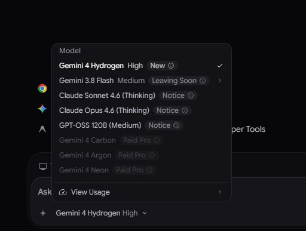
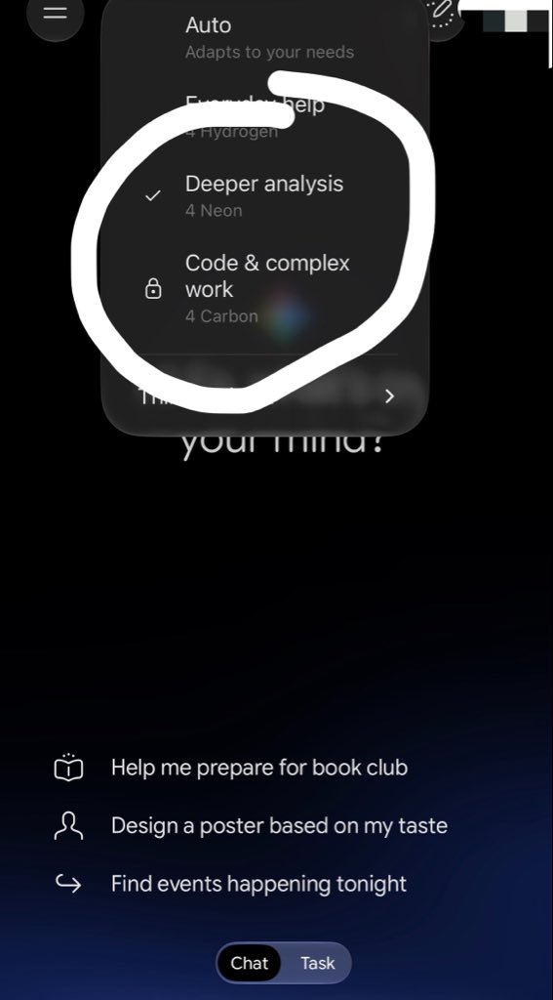
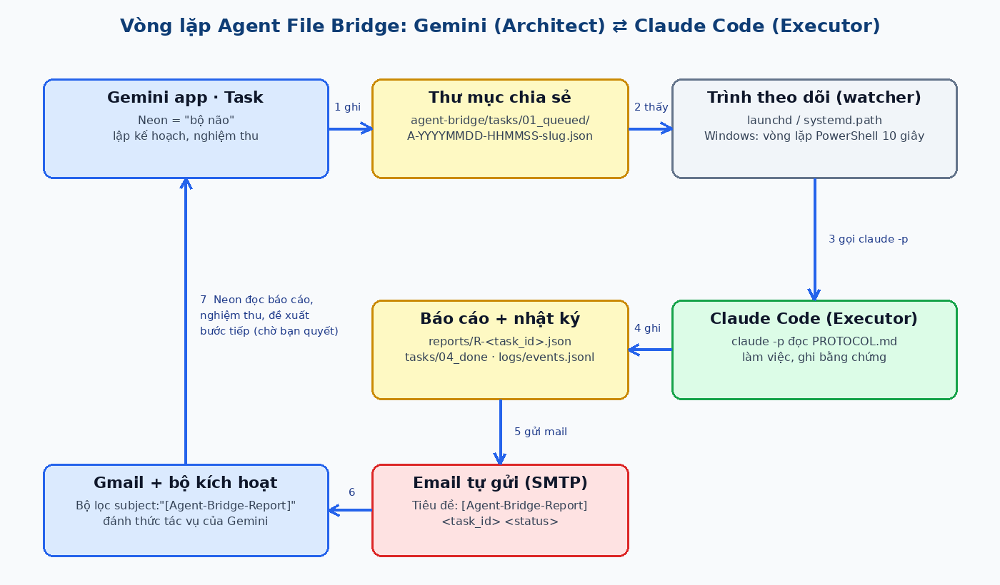
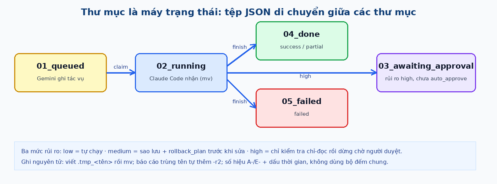
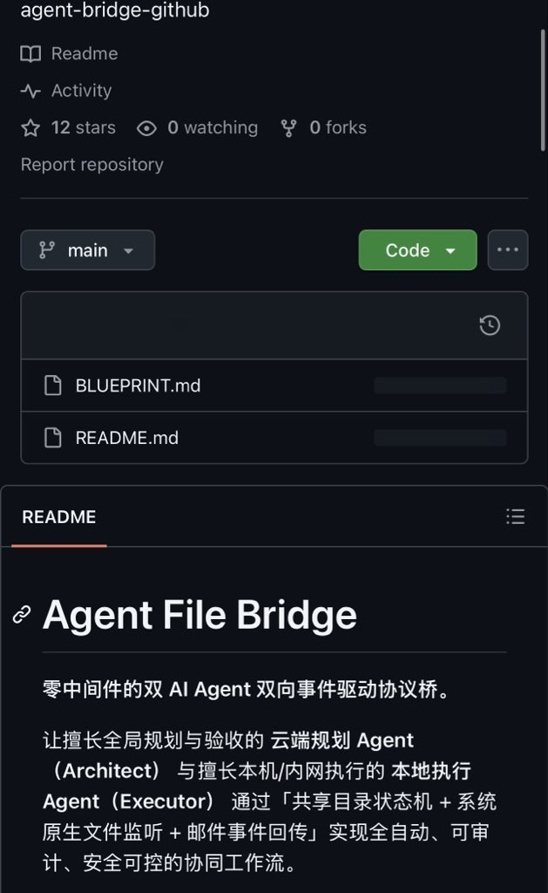

Đây là bài tổng hợp có dịch và giải thích, không phải bản dịch nguyên văn. Phần tiếng Anh gồm các ý trích/diễn giải từ bài đăng (tiếng Trung), README và BLUEPRINT của kho mã, bài ra mắt Gemini 4 Neon của Google, các trang trợ giúp của Gemini và diễn đàn Google Antigravity; lệnh và mã giữ nguyên. Ba ảnh chụp màn hình là ảnh đính kèm trong bài của tác giả, thuộc về tác giả, đăng ở đây vì mục đích học tập phi thương mại và có ghi công; hai sơ đồ còn lại do người viết vẽ từ tài liệu của kho mã. Người viết không dựng lại hệ thống này nên không khẳng định nó chạy được.
Cập nhật 27/11/2026: Gói Google AI Pro nhận qua Jio đã được dùng Gemini 4 Hydrogen trong Antigravity. Neon, Argon và Carbon ở đó vẫn bị khóa (“Paid Pro”). Bài đã được sửa cho khớp. Nguồn: người dùng trên diễn đàn Google Antigravity và các bài trên X khoảng 25/11/2026 (ví dụ @BitSharC, @txkaimxra), cùng xác nhận của bạn đọc ngày 27/11/2026.
Update 27/11/2026: Jio-bundled Google AI Pro plans now include Gemini 4 Hydrogen in Antigravity. Neon, Argon and Carbon remain locked there (“Paid Pro”). This article has been corrected accordingly. Sources: users on the Google Antigravity forum and posts on X around 25 Nov 2026 (e.g. @BitSharC, @txkaimxra), plus a reader confirmation on 27 Nov 2026.

Ảnh đính kèm trong bài của @iwishuagain: menu mô hình của Antigravity với tài khoản Jio. Gemini 4 Neon, Argon và Carbon bị làm mờ (“Paid Pro”). Hình thuộc về tác giả.
TL;DR
- Vấn đề: với gói Google AI Pro nhận qua Jio, Antigravity nay đã cho dùng Gemini 4 Hydrogen, nhưng Neon, Argon và Carbon vẫn bị khóa; ứng dụng Gemini trên điện thoại/web vẫn cho chọn Gemini 4 Neon. Ý tưởng của bài: để Neon trong ứng dụng làm “bộ não” (lập kế hoạch, nghiệm thu) còn Claude Code chạy trên máy mình làm “đôi tay” (chạy lệnh thật).
- Hai bên không nói chuyện trực tiếp. Họ nối với nhau bằng một thư mục chia sẻ làm máy trạng thái (
tasks/01_queued → 02_running → 04_done), một trình theo dõi thư mục để đánh thức Claude Code, và một email tự gửi có tiêu đề cố định[Agent-Bridge-Report]để đánh thức lại Gemini qua bộ kích hoạt Gmail. Kho mã chỉ có README và một bản thiết kế (BLUEPRINT.md); mã được AI sinh ra tại chỗ. - Bài hướng dẫn 14 bước cho Windows, nhưng chính kho mã chỉ viết trình theo dõi cho macOS và Linux. Tác giả tự thêm một vòng lặp PowerShell 10 giây. Ngoài ra, theo trang trợ giúp của Google, tính năng “thư mục đã kết nối” cho Tasks hiện chỉ có trên ứng dụng Gemini cho Mac, nên bước 8 trên Windows cần kiểm chứng trước.
- Các trả lời: khen ý tưởng, hỏi về Codex thay Claude, lo bị khóa tài khoản Google, và đề xuất đơn giản hơn là dùng MCP cục bộ hoặc một cổng proxy mã nguồn mở. Người viết bổ sung các rủi ro bài chưa nói: mật khẩu ứng dụng Gmail, quyền của
claude -p, vòng lặp có thể gọi lại liên tục, và điều khoản dịch vụ.
Cách đọc: Ở chế độ Song ngữ, rê chuột lên từng đoạn để xem tiếng Việt bên dưới. Trên điện thoại, chạm đoạn để mở/đóng bản dịch; chạm liên kết vẫn mở liên kết. Dùng phím Tab để xem bản dịch, Esc để đóng. Nút nổi góc dưới bên trái chuyển sang Toàn bộ tiếng Việt và ghi nhớ lựa chọn. Khi tắt JavaScript, cả hai ngôn ngữ được hiển thị.
Bài viết song ngữ
What the post is about
Bài đăng nói về điều gì
On 26 Nov 2026 @iwishuagain posted (in Chinese) a long thread-style note. Paraphrased: the free Jio plan for Gemini only lets him use 3.8 inside Antigravity, which is nowhere near enough; a heavy user on the “L” forum found a new way round it. Jio-plan accounts cannot use Neon in Antigravity, but they can use it in the phone app, so let the app do the thinking: Neon inside the Gemini app as the brain, local Claude Code as the hands, running automatically, and day to day you only type one request in the Gemini app’s task mode. The post then gives a 14-step recipe and links the project, wanghuayu666/agent-bridge-github, with the warning “it is complicated, just hand it to an AI to do”.
Ngày 26/11/2026, @iwishuagain đăng (bằng tiếng Trung) một bài dài. Diễn giải: gói Jio dùng miễn phí của Gemini trong Antigravity chỉ dùng được tối đa bản 3.8, hoàn toàn không đủ; một cao thủ trên diễn đàn “L” lại tìm ra cách mới. Tài khoản gói Jio không dùng được Neon trong Antigravity nhưng dùng được trong ứng dụng điện thoại, vậy cứ để ứng dụng lo phần suy nghĩ: Neon trong ứng dụng Gemini làm bộ não, Claude Code cài trên máy làm đôi tay, chạy hoàn toàn tự động, ngày thường chỉ cần gõ một câu ở chế độ Task của ứng dụng Gemini. Bài tiếp đó đưa công thức 14 bước và dẫn tới dự án wanghuayu666/agent-bridge-github, kèm lời dặn “rất phức tạp, nên ném thẳng cho AI làm”.
This article keeps the post’s order, adds the background needed to judge the claim (what Neon is, why a Jio plan behaves differently in two products, what the project actually contains), draws two figures, summarises the replies, and lists risks the post does not mention.
Bài này giữ đúng thứ tự của bài đăng, bổ sung bối cảnh để đánh giá lời khẳng định (Neon là gì, vì sao gói Jio hoạt động khác nhau ở hai sản phẩm, dự án thật sự chứa gì), vẽ hai sơ đồ, tóm tắt phần trả lời và nêu những rủi ro bài đăng không nhắc tới.

Background: Gemini 4, the Jio plan and two different “doors”
Bối cảnh: Gemini 4, gói Jio và hai “cửa” khác nhau
Google introduced Gemini 4 Neon on 18 Nov 2026 as a “frontier-level” model that sits between Hydrogen (fast, everyday) and Carbon (the strongest, for the hardest long-horizon work). Google’s own launch post reports a score of 61 on the Artificial Analysis Intelligence Index at xhigh thinking (#3 overall), a 1-million-token context window and API pricing of $3 per million input and $15 per million output tokens. It is available to Pro and Ultra subscribers in the Gemini app and to paid Pro/Ultra subscribers in Antigravity. These are vendor-reported numbers.
Google giới thiệu Gemini 4 Neon ngày 18/11/2026 như một mô hình “tầm biên giới” nằm giữa Hydrogen (nhanh, dùng hằng ngày) và Carbon (mạnh nhất, cho việc dài hơi khó nhất). Bài ra mắt của chính Google ghi điểm 61 trên Artificial Analysis Intelligence Index ở mức suy nghĩ xhigh (hạng 3 chung cuộc), cửa sổ ngữ cảnh 1 triệu token và giá API 3 USD cho mỗi triệu token vào, 15 USD cho mỗi triệu token ra. Mô hình có trong ứng dụng Gemini cho người dùng Pro và Ultra, và trong Antigravity cho người dùng Pro/Ultra trả phí. Đây là số liệu do nhà cung cấp tự công bố.
The puzzle in the post is that the same Jio-bundled “Google AI Pro” behaves differently in two places — but the gap is narrower than mid-November reports suggested. In mid-November, users on the Google Antigravity developer forum said Hydrogen and Neon worked on gemini.google.com with a Jio bundle, while every Gemini 4 model was greyed out in Antigravity (“currently available to paid Pro and Ultra subscribers”). Google staff replies at the time did not agree with each other: one (20 Nov) said partner promotional bundles do not include Gemini 4 models there and suggested a paid-tier Gemini API key in the Antigravity CLI or a separate paid Pro/Ultra account; another said partner-bundled Pro includes Hydrogen. That conflict is now settled on the Hydrogen point. Around 25 Nov 2026, users on the same official forum and on X (for example @BitSharC and @txkaimxra) reported that Gemini 4 Hydrogen had been unlocked for Jio and other partner/promotional plans in Antigravity. Neon, Argon and Carbon stayed marked “Paid Pro”. The Antigravity screenshot at the top of this article, taken for the 26 Nov post, already shows that later state: Hydrogen selected, 3.8 Flash marked “Leaving Soon”, Neon, Argon and Carbon marked “Paid Pro”. So the remaining gap the post is trying to close is Neon (and the other frontier models), not Gemini 4 as a whole.
Điểm mấu chốt của bài là cùng một gói “Google AI Pro” nhận qua Jio lại hoạt động khác nhau ở hai nơi — nhưng khoảng cách hẹp hơn so với các báo cáo giữa tháng 11. Giữa tháng 11, người dùng trên diễn đàn nhà phát triển Google Antigravity nói với gói Jio thì Hydrogen và Neon chạy được trên gemini.google.com, còn mọi mô hình Gemini 4 đều bị làm mờ trong Antigravity (“hiện chỉ dành cho người dùng Pro và Ultra trả phí”). Các trả lời của nhân viên Google lúc đó không khớp nhau: một trả lời (20/11) nói gói khuyến mãi của đối tác không gồm mô hình Gemini 4 ở đó và gợi ý dùng khóa API Gemini bậc trả phí trong Antigravity CLI hoặc một tài khoản Pro/Ultra trả phí riêng; một trả lời khác nói gói Pro qua đối tác có Hydrogen. Điểm Hydrogen đến nay đã rõ. Khoảng 25/11/2026, người dùng trên cùng diễn đàn chính thức và trên X (ví dụ @BitSharC và @txkaimxra) cho biết Gemini 4 Hydrogen đã được mở cho gói Jio và các gói khuyến mãi/đối tác khác trong Antigravity. Neon, Argon và Carbon vẫn ghi “Paid Pro”. Ảnh chụp Antigravity ở đầu bài này, chụp cho bài đăng ngày 26/11, đã cho thấy đúng trạng thái sau đó: Hydrogen được chọn, 3.8 Flash ghi “Leaving Soon”, còn Neon, Argon, Carbon ghi “Paid Pro”. Vậy khoảng trống mà bài gốc muốn khắc phục là Neon (và các mô hình biên giới khác), không phải toàn bộ dòng Gemini 4.
On the app side, Google’s help page “About Gemini models” lists Neon for Google AI Pro in both chats and tasks. “Tasks in Gemini” is the agent mode (the Chat/Task switch at the bottom of the Gemini app screenshot). Per the schedules help page, a Pro or Ultra plan unlocks time-based schedules, topic monitors and Gmail monitors, which run a task when an email matching a Gmail filter arrives. That last feature is the “wake-up” half of the bridge.
Ở phía ứng dụng, trang trợ giúp “About Gemini models” của Google liệt kê Neon cho gói Google AI Pro ở cả chat lẫn task. “Tasks in Gemini” là chế độ tác tử (công tắc Chat/Task ở cuối ảnh chụp ứng dụng Gemini). Theo trang trợ giúp về lịch, gói Pro hoặc Ultra mở khóa lịch theo thời gian, theo dõi chủ đề và theo dõi Gmail, tức chạy một tác vụ khi có thư khớp bộ lọc Gmail đến. Tính năng cuối chính là nửa “đánh thức” của cây cầu.
The idea: brain and hands
Ý tưởng: bộ não và đôi tay
The project README calls it a “zero-middleware, two-AI-agent, bidirectional, event-driven protocol bridge”. It splits the work between a cloud Architect (here the Gemini app in task mode: good at decomposing, designing and reviewing, but sandboxed, so it cannot drive your terminal, Docker or LAN) and a local Executor (here Claude Code, though the README also names Hermes Agent, Codex and OpenCode: full shell, SSH, Docker and browser, but no independent review loop). The README’s own list of design goals: no Redis, no message queue, no always-on web backend, just the file system, native file watching and standard SMTP mail.
README của dự án gọi nó là “cầu giao thức hai tác tử AI, hai chiều, điều khiển bằng sự kiện, không phần mềm trung gian”. Công việc được chia giữa Architect trên đám mây (ở đây là ứng dụng Gemini ở chế độ task: giỏi phân rã, thiết kế và rà soát, nhưng bị nhốt trong hộp cát nên không điều khiển được terminal, Docker hay mạng nội bộ của bạn) và Executor cục bộ (ở đây là Claude Code, dù README còn nêu Hermes Agent, Codex và OpenCode: có đủ shell, SSH, Docker, trình duyệt, nhưng thiếu vòng rà soát độc lập). Mục tiêu thiết kế theo README: không Redis, không hàng đợi tin nhắn, không backend web chạy liên tục, chỉ dùng hệ thống tệp, theo dõi tệp gốc của hệ điều hành và email SMTP chuẩn.

The README’s timeline for one task: Architect writes tasks/01_queued/A-xxx.json (0 s); the OS watcher fires within 1–2 s (launchd WatchPaths on macOS, systemd.path on Linux) and wakes the Executor; the Executor claims the file into 02_running/, works step by step and collects evidence; on completion it writes reports/R-A-xxx.json, archives the task to 04_done/ and sends a redacted email with subject [Agent-Bridge-Report] <task_id> <status> via Python’s smtplib; the Gmail trigger wakes the Architect, which reviews the report and pushes a verdict to you. An empty queue costs “0 CPU / 0 tokens”, because the watcher only calls the Executor when a JSON file exists.
Dòng thời gian của một tác vụ theo README: Architect ghi tasks/01_queued/A-xxx.json (giây 0); trình theo dõi của hệ điều hành kích hoạt trong 1–2 giây (WatchPaths của launchd trên macOS, systemd.path trên Linux) và đánh thức Executor; Executor nhận tệp sang 02_running/, làm từng bước và thu bằng chứng; xong thì ghi reports/R-A-xxx.json, lưu tác vụ vào 04_done/ và gửi email đã lược bỏ thông tin nhạy cảm, tiêu đề [Agent-Bridge-Report] <task_id> <status>, bằng smtplib của Python; bộ kích hoạt Gmail đánh thức Architect, nó rà báo cáo rồi đẩy kết luận cho bạn. Hàng đợi rỗng tốn “0 CPU / 0 token” vì trình theo dõi chỉ gọi Executor khi có tệp JSON.
The 14 steps in the post, grouped
14 bước trong bài, gom lại
Condensed from the post (the commands are the author’s; the grouping is the writer’s):
Rút gọn từ bài đăng (lệnh là của tác giả; cách gom nhóm là của người viết):
| Nhóm | Bước trong bài | Nội dung |
|---|---|---|
| Điều kiện | 1 | Gói Jio còn hiệu lực, Antigravity vào được, và Neon hiện trong danh sách mô hình của ứng dụng Gemini. Thiếu một thứ thì chưa nên bắt đầu. |
| Thư mục chung | 2, 3 | Tạo %USERPROFILE%\agent-bridge (cả Gemini và Claude Code phải đọc ghi được) và tải BLUEPRINT.md từ kho mã bỏ vào. Kho chỉ có README và bản thiết kế, không có sẵn tập lệnh. |
| Cài tay (Executor) | 4, 5 | Cài Claude Code bằng irm https://claude.ai/install.ps1 | iex rồi kiểm tra claude --version, lần đầu chạy sẽ mở trình duyệt để đăng nhập. Cài Python 3.11+ (tick “Add Python to PATH”). |
| Email báo cáo | 6, 7 | Bật xác minh hai bước, tạo mật khẩu ứng dụng 16 ký tự cho Gmail, lưu vào Windows Credential Manager (không để trong thư mục chung, không gửi cho ai). Tạo bộ lọc subject:"[Agent-Bridge-Report]" để bỏ qua hộp thư đến và gắn nhãn Agent-Bridge. |
| Khởi tạo | 8, 9 | Trong chế độ Task, kết nối thư mục đã tạo (quyền đọc/ghi) và đưa BLUEPRINT.md cho Gemini để nó dựng máy trạng thái thư mục, PROTOCOL.md, bridge_state.json và một tác vụ bắt tay chỉ-đọc đầu tiên. |
| Dựng Executor | 10, 11 | Chạy claude trong thư mục chung và bảo nó viết bridge_exec.py theo mục 3 của bản thiết kế vào %USERPROFILE%\.agent-bridge\, rồi tự dán mật khẩu 16 ký tự vào kho thông tin xác thực. Thêm trình theo dõi Windows (xem phần sau) và đăng ký bằng Task Scheduler “khi đăng nhập”. |
| Đóng vòng | 12, 13, 14 | Tạo tác vụ kích hoạt bằng email trong Gemini (đọc báo cáo, trích task_id, status, summary, step_results, issues, next_suggestions, đối chiếu với reports, chỉ đề xuất chứ không tự giao việc mới). Chạy một lần bắt tay và kiểm ba điều. Sau đó dùng hằng ngày, ví dụ kiểm tra máy chủ hoặc dọn thư mục. |
Inside the protocol: the folder is the state machine
Bên trong giao thức: thư mục là máy trạng thái
The BLUEPRINT (v2.0, 246 lines) is the real substance of the project. Its core rules: task ids are namespaced and timestamped (A-YYYYMMDD-HHMMSS-<slug> from the Architect, E-… for Executor-initiated reports) instead of a shared counter, so concurrent writers cannot collide; every JSON file is written as .tmp_<name> then renamed with mv so nobody reads half a file; the Executor claims a task by moving it to 02_running/ so it cannot be consumed twice; reports are never overwritten (a duplicate name gets -r2, -r3).
BLUEPRINT (v2.0, 246 dòng) mới là phần thực chất của dự án. Các quy tắc cốt lõi: số hiệu tác vụ có không gian tên và dấu thời gian (A-YYYYMMDD-HHMMSS-<slug> từ Architect, E-… cho báo cáo do Executor chủ động) thay vì bộ đếm chung, nên nhiều bên ghi đồng thời không đụng số; mọi tệp JSON được ghi thành .tmp_<tên> rồi đổi tên bằng mv để không ai đọc phải nửa tệp; Executor “nhận” tác vụ bằng cách chuyển nó sang 02_running/ nên không thể bị xử lý hai lần; báo cáo không bao giờ bị ghi đè (trùng tên thì thêm -r2, -r3).

A three-level risk gate decides what the Executor may do on its own: low (read-only inspection) runs automatically; medium (ordinary reversible change) must back up first and carry a rollback_plan; high (deleting data, changing the network, rebooting the host, stopping a core database) does only a read-only pre-check and parks in 03_awaiting_approval/ unless auto_approve is true. Two permanent red lines: no plaintext credentials in the shared folder or in the trigger email, and single-step serial execution with no repeated test probes or duplicate mails. The report email is stripped of any key matching password|passwd|secret|token|api_key|private_key|credential before sending.
Cổng rủi ro ba mức quyết định Executor được tự làm gì: low (kiểm tra chỉ-đọc) chạy tự động; medium (thay đổi thường, đảo ngược được) phải sao lưu trước và có rollback_plan; high (xóa dữ liệu, đổi mạng, khởi động lại máy chủ, dừng cơ sở dữ liệu lõi) chỉ làm kiểm tra chỉ-đọc rồi dừng ở 03_awaiting_approval/ trừ khi auto_approve là true. Hai lằn ranh đỏ vĩnh viễn: không có thông tin xác thực dạng chữ thô trong thư mục chung hay email kích hoạt, và chạy tuần tự từng bước, không gửi lặp thăm dò hay thư trùng. Email báo cáo bị lọc bỏ mọi khóa khớp password|passwd|secret|token|api_key|private_key|credential trước khi gửi.
The task ticket is plain JSON. An abridged version of the BLUEPRINT’s handshake example (fields kept, long strings shortened):
Phiếu tác vụ là JSON thuần. Bản rút gọn từ ví dụ bắt tay trong BLUEPRINT (giữ nguyên các trường, rút ngắn chuỗi dài):
{
"protocol_version": "2.0",
"task_id": "A-20261126-093000-handshake",
"from": "architect", "to": "executor",
"title": "First handshake and capability self-report",
"risk_level": "low",
"auto_approve": true,
"constraints": ["read-only queries only", "no plaintext credentials in the report"],
"steps": [
{"id": 1, "action": "claim: move to 02_running/, log task_claimed"},
{"id": 2, "action": "collect OS version, hostname, time, available tool categories"},
{"id": 3, "action": "write report atomically, archive to 04_done/, send report mail"}
],
"deliverables": ["reports/R-A-20261126-093000-handshake.json"],
"rollback_plan": null
}The executor side is specified, not shipped: bridge_exec.py (stdlib only, kept outside the shared folder) has two sub-commands, claim and finish; finish writes the report, moves the ticket to 04_done/ or 05_failed/, updates a heartbeat in bridge_state.json, appends to logs/events.jsonl and sends the mail (SMTP over SSL on port 465 with a fallback to STARTTLS on 587; a mail failure must never roll back the archive). The watcher shell script takes a lock directory, clears stale locks after 30 minutes and re-checks the queue up to six times per wake-up.
Phía Executor được đặc tả chứ không có sẵn: bridge_exec.py (chỉ dùng thư viện chuẩn, đặt ngoài thư mục chung) có hai lệnh con, claim và finish; finish ghi báo cáo, chuyển phiếu sang 04_done/ hoặc 05_failed/, cập nhật nhịp tim trong bridge_state.json, ghi thêm vào logs/events.jsonl và gửi thư (SMTP qua SSL cổng 465, dự phòng STARTTLS cổng 587; lỗi gửi thư tuyệt đối không được làm hoàn tác việc lưu trữ). Tập lệnh theo dõi dùng một thư mục khóa, xóa khóa cũ sau 30 phút và kiểm tra lại hàng đợi tối đa sáu lần mỗi lần được đánh thức.
The Windows gap and the PowerShell loop
Khoảng trống Windows và vòng lặp PowerShell
The BLUEPRINT only gives watchers for macOS (launchd) and Linux (systemd.path plus an optional 60-second timer). The post is written for Windows, so step 11 improvises one, following the BLUEPRINT’s “60-second fallback” idea: a script that loops forever, checks tasks\01_queued every 10 seconds, and runs claude -p with a prompt telling it to process the queue per PROTOCOL.md and send the report mail. It is registered in Task Scheduler to start at logon. Claude Code moves the file out of the queue when it claims it, so an empty queue wakes nothing and burns no tokens.
BLUEPRINT chỉ cung cấp trình theo dõi cho macOS (launchd) và Linux (systemd.path cùng bộ hẹn giờ 60 giây tùy chọn). Bài đăng viết cho Windows nên bước 11 tự chế một cái, theo ý tưởng “dự phòng 60 giây” của BLUEPRINT: một tập lệnh lặp mãi, cứ 10 giây xem tasks\01_queued có tệp không, nếu có thì chạy claude -p với lời nhắc yêu cầu xử lý hàng đợi theo PROTOCOL.md rồi gửi thư báo cáo. Nó được đăng ký trong Task Scheduler để khởi động khi đăng nhập. Claude Code chuyển tệp ra khỏi hàng đợi khi nhận, nên hàng đợi rỗng thì không đánh thức gì và không tốn token.
The script as it appears in the post is garbled (the first line lost its beginning when posted). Reconstructed here, with the first line being the writer’s guess at the intent and the rest from the post:
Tập lệnh trong bài đăng bị lỗi hiển thị (dòng đầu mất phần mở đầu khi đăng). Dựng lại ở đây: dòng đầu là suy đoán của người viết về ý định, phần còn lại lấy từ bài:
$queue = "$env:USERPROFILE\agent-bridge\tasks\01_queued" # reconstructed, the post's first line is cut off
while ($true) {
if (Get-ChildItem $queue\*.json -ErrorAction SilentlyContinue) {
claude -p "check and process the task tickets in %USERPROFILE%\agent-bridge\tasks\01_queued\, follow PROTOCOL.md in the agent-bridge folder, then send the report mail with bridge_exec.py"
# (the post's prompt is in Chinese; translated here)
}
Start-Sleep -Seconds 10
}Two things to check in that loop (the writer’s reading, not tested): %USERPROFILE% is cmd.exe syntax, and PowerShell does not expand it inside a string, so the prompt may reach Claude Code with the literal text (it may still resolve it, but the post does not say); and nothing in the loop stops it re-launching claude -p every ~10 seconds if Claude fails before claiming the ticket, which would spend tokens repeatedly. The shell version in the BLUEPRINT has a lock and a retry cap; this PowerShell version has neither.
Hai điểm cần kiểm tra trong vòng lặp đó (người viết đọc mã, chưa chạy thử): %USERPROFILE% là cú pháp của cmd.exe, PowerShell không mở rộng nó bên trong chuỗi, nên lời nhắc có thể đến Claude Code với nguyên chữ đó (có thể Claude vẫn tự hiểu, nhưng bài không nói); và không có gì trong vòng lặp ngăn nó gọi lại claude -p mỗi ~10 giây nếu Claude lỗi trước khi nhận phiếu, gây tốn token lặp lại. Bản shell trong BLUEPRINT có khóa và giới hạn thử lại; bản PowerShell này không có cả hai.
Second gap: step 8 asks you to “connect a local folder” in the Gemini app’s task mode on a Windows PC. Google’s Tasks help page lists the app surfaces as mobile, Mac and web, and its “Connected folders” instructions are for the Mac app; Google’s desktop page lists connecting local files to Tasks among the macOS capabilities and says more native capabilities “will roll out to Windows over time”. Third-party coverage in October 2026 also reported that the Windows app, launched on 10 Sep 2026, had no connected folders yet. Whether this has changed since is something to check in your own app before relying on step 8.
Khoảng trống thứ hai: bước 8 yêu cầu “kết nối thư mục cục bộ” ở chế độ task của ứng dụng Gemini trên máy Windows. Trang trợ giúp Tasks của Google liệt kê các bề mặt hỗ trợ là điện thoại, Mac và web, còn hướng dẫn “Connected folders” là cho ứng dụng Mac; trang desktop của Google xếp việc kết nối tệp cục bộ cho Tasks vào các khả năng của macOS và nói thêm các khả năng gốc “sẽ lần lượt có trên Windows”. Các bài của bên thứ ba hồi tháng 10/2026 cũng ghi nhận ứng dụng Windows, ra mắt ngày 10/9/2026, chưa có thư mục đã kết nối. Từ đó đến nay có đổi hay không thì bạn cần tự kiểm tra trong ứng dụng của mình trước khi dựa vào bước 8.
What the replies add
Phần trả lời bổ sung những gì
The post had 6 replies when read (30 likes, 74 bookmarks, about 5,900 views). Two are short praise; the rest raise real alternatives and worries:
Khi đọc, bài có 6 trả lời (30 lượt thích, 74 lượt lưu, khoảng 5.900 lượt xem). Hai trả lời là khen ngắn; số còn lại nêu phương án thay thế và nỗi lo thật sự:
- Praise for the trick. @Adam08346368242 and @rainwaterJay call using the app to get round the limit a clever idea and expect local Claude Code to pair well with it.
- Swap Claude for Codex, and a ban worry. @XiangyuRentl says it is useful because their Jio plan can be put to use, but they have no Claude and would probably substitute Codex, and will look into whether this could get the Google account banned. Writer’s note: the post does not address account-risk at all; the BLUEPRINT itself says the Executor can be Claude Code, Codex, Hermes Agent or OpenCode, so the swap is within the design.
- “Just build a local MCP.” @iamforu_ says all this going round in circles is solved by a local MCP server. @sanicee_ adds that a local MCP with your own domain and private encryption is safer than anything. Writer’s note: a direct tool connection would drop the polling and the email hop, but the Gemini app would need a way to reach the server; the post and replies do not show that this works with the app’s task mode.
- “Use this instead.” @vildanden_ai says it need not be this complicated and that this alternative is better and does not depend on “the Gemini app’s natively crippled harness”; the reply quotes an earlier post about ShawTim/gemini-app2api (MIT, an “unofficial interoperability research project” that exposes Gemini-app quota to coding agents through a gateway or plugins, with the claim that any Pro plan including Jio gets Neon through it). Writer’s note: that author’s own earlier post warns that reverse proxies “may be risk-controlled”, and the later one says “purely academic, at your own risk”. I did not run or audit it.
- Khen mẹo này. @Adam08346368242 và @rainwaterJay cho rằng dùng ứng dụng để lách giới hạn là ý tưởng khéo và kỳ vọng Claude Code cục bộ phối hợp tốt.
- Đổi Claude sang Codex, và nỗi lo bị khóa. @XiangyuRentl nói bài có ích vì gói Jio của họ được tận dụng, nhưng họ không có Claude nên chắc sẽ thay bằng Codex, và sẽ tìm hiểu xem cách này có dẫn tới bị khóa tài khoản Google không. Ghi chú người viết: bài đăng không đề cập rủi ro tài khoản; chính BLUEPRINT nói Executor có thể là Claude Code, Codex, Hermes Agent hay OpenCode, nên việc thay thế nằm trong thiết kế.
- “Dựng MCP cục bộ là xong.” @iamforu_ nói vòng vo thế này thì một máy chủ MCP cục bộ giải quyết hết. @sanicee_ thêm rằng MCP cục bộ kèm tên miền riêng và mã hóa riêng an toàn hơn mọi cách. Ghi chú người viết: kết nối công cụ trực tiếp sẽ bỏ được khâu quét và khâu email, nhưng ứng dụng Gemini cần có cách chạm tới máy chủ đó; bài và các trả lời không cho thấy điều này hoạt động với chế độ task của ứng dụng.
- “Dùng cái này thay thế.” @vildanden_ai nói không cần phức tạp thế, cách này tốt hơn và không phụ thuộc vào “bộ khung gốc bị làm dở của ứng dụng Gemini”; trả lời trích một bài trước nhắc tới ShawTim/gemini-app2api (MIT, một “dự án nghiên cứu khả năng tương tác không chính thức” đưa hạn mức của ứng dụng Gemini cho các tác tử lập trình qua cổng hoặc plugin, và khẳng định mọi gói Pro, kể cả Jio, đều dùng được Neon qua nó). Ghi chú người viết: bài trước đó của chính tác giả này cảnh báo proxy ngược “có thể bị kiểm soát rủi ro”, bài sau ghi “thuần nghiên cứu, tự chịu rủi ro”. Tôi không chạy hay kiểm tra mã của nó.
Risks and what the post leaves out
Rủi ro và những gì bài chưa nói
- Gmail app password = broad access. A Google app password lets whatever holds it sign in to that mailbox over SMTP/IMAP. The blueprint keeps it out of the shared folder and out of the mail body, which is right, but a dedicated throw-away Gmail account for the bridge is a cleaner design than your main one.
- Permissions of
claude -p. In non-interactive mode Claude Code cannot stop and ask you, so tools that need approval are normally refused unless you pre-allow them or choose a permission mode. The post does not say how to configure that, and the choice decides how much the “hands” can do unattended. This is also where the BLUEPRINT’s risk gate matters: it is enforced by the model followingPROTOCOL.md, not by the operating system. - Prompt injection through the loop. Both agents read text that other parties can influence (web pages, mail, files). Google’s Neon post claims strong resistance on an indirect-prompt-injection benchmark; that is vendor-reported and does not cover a local executor that can run commands. Keep
hightasks manual, as the README itself advises for deleting data, stopping core databases, changing firewalls or changing the agent’s own configuration. Consider running the Executor in an isolated environment (see Docker Sandboxes vs. Docker containers). - Terms of service and account risk. The headline is about getting a promotional Jio plan to do more. Google’s staff say partner bundles are treated differently in Antigravity for frontier models (Neon, Argon, Carbon), even after Hydrogen was unlocked. Using the Gemini app’s own Task mode and Gmail monitors as documented is a normal use of the product, but heavy automated use and the third-party gateways mentioned in the replies are different from that. The post gives no evidence either way, and a reply asks the same question.
- Availability and region. Tasks in Gemini are not available in the EEA, UK, Switzerland and Nigeria with a Pro plan, and Gmail monitors need Pro or Ultra. The Antigravity screenshot also shows a notice that Claude models there will stop being available for third-party access from 30 Nov 2026; that is about Antigravity, not about running Claude Code on your own machine with your own account.
- Fragility. The chain has many links: Jio plan, Neon access, a Task-mode folder connection, a Gmail filter, a watcher, Claude login, SMTP. The post’s own acceptance test (step 13) is the right way to find out which link breaks first.
- Mật khẩu ứng dụng Gmail = quyền rộng. Mật khẩu ứng dụng của Google cho phép bên giữ nó đăng nhập hộp thư đó qua SMTP/IMAP. Bản thiết kế giữ nó ngoài thư mục chung và ngoài thân thư, như vậy là đúng, nhưng dùng một tài khoản Gmail riêng, bỏ đi được cho cây cầu thì sạch hơn dùng tài khoản chính.
- Quyền của
claude -p. Ở chế độ không tương tác, Claude Code không thể dừng lại hỏi bạn, nên các công cụ cần phê duyệt thường bị từ chối trừ khi bạn cho phép trước hoặc chọn một chế độ quyền. Bài không nói cách cấu hình, mà lựa chọn đó quyết định “đôi tay” tự làm được bao nhiêu khi vắng người. Đây cũng là chỗ cổng rủi ro của BLUEPRINT quan trọng: nó được thực thi bởi việc mô hình làm theoPROTOCOL.md, không phải bởi hệ điều hành. - Chèn lệnh qua vòng lặp. Cả hai tác tử đều đọc văn bản mà bên khác có thể tác động (trang web, thư, tệp). Bài Neon của Google tuyên bố khả năng chống chèn lệnh gián tiếp tốt trên một bộ đo; đó là số liệu của nhà cung cấp và không bao gồm một Executor cục bộ có thể chạy lệnh. Hãy giữ các tác vụ
highở chế độ thủ công, đúng như README khuyên với việc xóa dữ liệu, dừng cơ sở dữ liệu lõi, sửa tường lửa hay sửa cấu hình của chính tác tử. Cân nhắc chạy Executor trong môi trường cô lập (xem Docker Sandboxes và Docker containers). - Điều khoản dịch vụ và rủi ro tài khoản. Tiêu đề bài là làm cho gói Jio khuyến mãi làm được nhiều hơn. Nhân viên Google nói gói của đối tác được xử lý khác trong Antigravity đối với các mô hình biên giới (Neon, Argon, Carbon), kể cả sau khi Hydrogen đã được mở. Dùng chế độ Task của ứng dụng Gemini và Gmail monitor đúng như tài liệu là cách dùng sản phẩm bình thường, còn việc tự động hóa nặng và các cổng bên thứ ba được nhắc trong phần trả lời thì khác. Bài không đưa bằng chứng nghiêng về phía nào, và một trả lời cũng hỏi đúng câu này.
- Khả năng sử dụng và khu vực. Tasks trong Gemini không có ở EEA, Anh, Thụy Sĩ và Nigeria kể cả với gói Pro, và Gmail monitor cần Pro hoặc Ultra. Ảnh chụp Antigravity cũng có thông báo các mô hình Claude ở đó sẽ ngừng cho bên thứ ba dùng từ 30/11/2026; chuyện đó là về Antigravity, không phải về việc chạy Claude Code trên máy bạn bằng tài khoản của bạn.
- Mong manh. Chuỗi có nhiều mắt xích: gói Jio, quyền dùng Neon, kết nối thư mục trong Task, bộ lọc Gmail, trình theo dõi, đăng nhập Claude, SMTP. Bài kiểm tra nghiệm thu của chính bài đăng (bước 13) là cách đúng để biết mắt xích nào đứt trước.
Try it yourself: the handshake test
Tự thử: bài kiểm tra bắt tay
The project’s end-to-end acceptance has three checks, in this order (BLUEPRINT section 6, matching step 13 of the post): (1) Gemini writes a read-only risk_level: low ticket to tasks/01_queued/; (2) within seconds the file moves from 01_queued to 02_running and is archived to 04_done, which you can confirm in logs/events.jsonl and the watcher log; (3) the trigger mailbox receives [Agent-Bridge-Report] <task_id> success and Gemini wakes on its own and pushes its verdict to you. Do this once, with a harmless task such as collecting OS version, hostname, time and available tools, before giving it anything real. If you only want to see the protocol without any cloud agent, you can hand-write that one JSON file yourself and watch the local half work.
Bài nghiệm thu đầu-cuối của dự án có ba kiểm tra theo thứ tự (mục 6 của BLUEPRINT, khớp bước 13 của bài đăng): (1) Gemini ghi một phiếu chỉ-đọc risk_level: low vào tasks/01_queued/; (2) trong vài giây tệp chuyển từ 01_queued sang 02_running rồi được lưu vào 04_done, bạn xác nhận được trong logs/events.jsonl và nhật ký trình theo dõi; (3) hộp thư kích hoạt nhận được [Agent-Bridge-Report] <task_id> success và Gemini tự thức dậy, đẩy kết luận cho bạn. Chỉ làm một lần, với tác vụ vô hại như thu phiên bản hệ điều hành, tên máy, giờ và công cụ sẵn có, trước khi giao việc thật. Nếu chỉ muốn xem giao thức mà không cần tác tử đám mây, bạn có thể tự viết tay tệp JSON đó và xem nửa cục bộ chạy.

agent-bridge-github chỉ có hai tệp, BLUEPRINT.md và README.md (12 sao lúc chụp; khi người viết kiểm tra là 16, không ghi giấy phép). Hình thuộc về tác giả.What to take from it
Rút ra điều gì
- The core pattern is general and sound: give a sandboxed planner and a hands-on executor a shared, human-readable state machine (folders and JSON), make every hand-off atomic, and add a wake-up channel in each direction. It needs no server, and every step can be audited by opening a folder.
- The part that is specific to this post is the entitlement workaround: Neon is reachable in the Gemini app on a Jio plan even though Antigravity still blocks it. (Hydrogen is now included in Antigravity; Neon, Argon and Carbon are not.) That depends on Google’s plan rules, which are changing quickly (the screenshot already shows 3.8 Flash as “Leaving Soon”).
- The project is a specification, not software: no scripts are shipped, so quality depends on what your AI generates from the BLUEPRINT. Read what it writes before you let it run unattended, especially the mail-sending code and anything that touches credentials.
- The Windows route is improvised and has two checkable gaps (the Mac-only connected-folder feature, and an unguarded 10-second loop). A Mac or Linux host matches the documented path better.
- If you can, compare it with the simpler options in the replies (a local MCP server, the paid-tier Gemini API key in Antigravity CLI that Google’s staff suggested) before building the full loop.
- Mẫu cốt lõi mang tính tổng quát và hợp lý: cho một bộ lập kế hoạch bị nhốt hộp cát và một bộ thực thi có tay làm việc cùng một máy trạng thái chung, người đọc được (thư mục và JSON), làm mọi lần bàn giao đều nguyên tử, và có kênh đánh thức ở mỗi chiều. Không cần máy chủ, và mọi bước đều kiểm toán được chỉ bằng cách mở thư mục.
- Phần riêng của bài này là cách lách quyền dùng mô hình: Neon dùng được trong ứng dụng Gemini với gói Jio dù Antigravity vẫn chặn nó. (Hydrogen nay đã có trong Antigravity; Neon, Argon và Carbon thì chưa.) Điều đó phụ thuộc quy tắc gói của Google, vốn đang đổi nhanh (ảnh chụp đã cho thấy 3.8 Flash ghi “Leaving Soon”).
- Dự án là bản đặc tả, không phải phần mềm: không có sẵn tập lệnh, nên chất lượng phụ thuộc vào thứ AI của bạn sinh ra từ BLUEPRINT. Hãy đọc những gì nó viết trước khi cho chạy không người trông, nhất là mã gửi thư và mọi thứ chạm tới thông tin xác thực.
- Đường Windows là tự chế và có hai chỗ có thể kiểm chứng (tính năng thư mục đã kết nối chỉ có trên Mac, và vòng lặp 10 giây không có chốt chặn). Máy Mac hoặc Linux khớp với đường đi được tài liệu hóa hơn.
- Nếu được, hãy so với các lựa chọn đơn giản hơn trong phần trả lời (máy chủ MCP cục bộ, khóa API Gemini bậc trả phí trong Antigravity CLI mà nhân viên Google gợi ý) trước khi dựng cả vòng lặp.
Know-how & Insight
Ghi chú và lưu ý của người dịch
- Nguồn gốc nội dung. Bài gốc là bài đăng tiếng Trung lúc 21:54 ngày 26/11/2026 (giờ Việt Nam) của @iwishuagain. Người viết đọc toàn văn bài đăng (dài hơn 280 ký tự, đọc qua trường note_tweet), 3 ảnh đính kèm, 6 trả lời, một bài được trích dẫn trong trả lời, README và BLUEPRINT.md của kho
wanghuayu666/agent-bridge-github(tạo lúc 19:05 ngày 26/11/2026 giờ Việt Nam, không ghi giấy phép), bài ra mắt Gemini 4 Neon của Google, các trang trợ giúp của Gemini về mô hình, Tasks, lịch và ứng dụng Mac, và hai chủ đề trên diễn đàn Google Antigravity. Ngày 27/11/2026 người viết đọc thêm chủ đề “Unfair Restriction of Gemini 4 Hydrogen…” và các bài trên X khoảng 25/11/2026 để cập nhật quyền dùng Hydrogen. Thời điểm đọc lần đầu: bài có khoảng 30 lượt thích, 74 lượt lưu, 5.900 lượt xem. Đây là bản tổng hợp, không phải bản dịch nguyên văn. - Người viết không dựng lại hệ thống. Không có gói Jio, ứng dụng Gemini hay máy Windows để thử. Mọi mô tả về cách hoạt động là theo README và BLUEPRINT; nhận xét về vòng lặp PowerShell (
%USERPROFILE%và việc gọi lại) là đọc mã, chưa chạy. Hãy xem chúng là giả thuyết để kiểm tra. - Tập lệnh PowerShell đã dựng lại. Dòng đầu của tập lệnh bị cắt trong bài đăng; dòng
$queue = …là suy đoán của người viết. Lời nhắc trong bài bằng tiếng Trung và được dịch sang tiếng Anh trong khối mã, không còn là nguyên văn. - Số liệu của Google. Điểm 61 trên Artificial Analysis Intelligence Index, giá API và cửa sổ 1 triệu token là của bài ra mắt Neon (18/11/2026, cập nhật 23/11/2026) do Google tự công bố, chưa được kiểm chứng độc lập. Bài chỉ dùng chúng để nói Neon là mô hình hạng cao, không dùng để so với Claude hay Codex.
- Cập nhật về Hydrogen (27/11/2026). Các trả lời của nhân viên Google giữa tháng 11 từng không khớp nhau về việc gói Jio có Hydrogen trong Antigravity hay không. Khoảng 25/11/2026, nhiều người dùng trên diễn đàn chính thức Google Antigravity xác nhận Hydrogen đã mở cho gói Jio (các bài của William_Spieker, Tonio_H, PRIYANSHU_SINGH2, Aether_01); cùng ngày, các bài trên X cũng nói vậy, ví dụ @BitSharC và @txkaimxra. Neon, Argon và Carbon vẫn bị khóa. Ảnh chụp trong bài gốc (26/11) đã cho thấy Hydrogen được chọn. Một bạn đọc cũng xác nhận điều này vào 27/11/2026. Người viết không có tài khoản Jio để tự kiểm. Không dùng một bài X riêng lẻ khẳng định mọi mô hình (kể cả Neon) đã mở, vì nhiều nguồn cùng lúc vẫn ghi Neon/Argon/Carbon là “Paid Pro”.
- Claude Code “Notice”. Thông báo trên ảnh chụp Antigravity (mô hình Claude sẽ không còn cho bên thứ ba dùng từ 30/11/2026) lấy từ diễn đàn Google; nó không ảnh hưởng tới việc chạy Claude Code bằng tài khoản Anthropic của chính bạn. Bài không nói gì về chi phí hay gói Anthropic cần có.
- “L站”. Tác giả viết rằng một cao thủ ở “L站” nghĩ ra giải pháp. Người viết không xác nhận được diễn đàn nào và không tìm được bài gốc ở đó; kho mã đứng tên khác với tác giả bài đăng. Công lao do đó được ghi cho kho mã
wanghuayu666/agent-bridge-github, còn @iwishuagain là người tổng hợp và đăng lại. - Ghi chú tên gọi. Giữ nguyên tiếng Anh các thuật ngữ: Architect/Executor, Task mode, Gmail monitor,
01_queued…05_failed,risk_level,auto_approve. “Bộ não/đôi tay” là cách diễn đạt của bài đăng. - Phần trả lời đã được lọc. Bài bỏ qua phần lớn lời khen chung chung; các liên kết rút gọn t.co không được mở riêng (đích của chúng đã có trong dữ liệu bài). Ảnh trong bài được trích dẫn của trả lời cuối không được xem.
- Liên hệ các bài cùng mạch trên blog. Xem Docker Sandboxes và Docker containers (cô lập tác tử), Khám phá thiết kế Super-agent (thiết kế hệ tác tử tự chủ), Xây ngôn ngữ Zed với đội quân agent AI (nhiều agent phối hợp) và DeepSeek Harness và plugin cộng đồng (bộ khung và cách đánh giá plugin an toàn).
Đây là phân tích bổ sung của người dịch, không phải phần nguyên văn hay khuyến nghị đã được tác giả xác nhận. Không có nội dung nào ở đây là lời khuyên né điều khoản dịch vụ của bất kỳ nhà cung cấp nào.
Mindmap — Gemini Neon và Claude Code qua Agent File Bridge
mindmap
root((Agent File Bridge))
Vấn đề
Gói Jio trong Antigravity
Hydrogen đã mở từ 25/11/2026
Neon Argon Carbon vẫn khóa
Ứng dụng Gemini vẫn chọn được Neon
Vai trò
Architect là Gemini Task
Executor là Claude Code
Có thể thay bằng Codex hay OpenCode
Giao thức
Thư mục là máy trạng thái
01 queued
02 running
04 done hoặc 05 failed
03 chờ phê duyệt
Ghi nguyên tử tmp rồi mv
Số hiệu A và E có dấu thời gian
Cổng rủi ro
low tự chạy
medium sao lưu và rollback
high dừng chờ người duyệt
Không lưu mật khẩu dạng chữ
Đánh thức
Chiều đi theo dõi thư mục
launchd và systemd path
Windows vòng lặp PowerShell
Chiều về email Agent-Bridge-Report
Gmail monitor đánh thức Gemini
14 bước
Điều kiện Jio Neon
Thư mục chung và BLUEPRINT
Cài Claude Code và Python
Mật khẩu ứng dụng Gmail
Bắt tay và nghiệm thu
Cần kiểm chứng
Thư mục kết nối chỉ có trên Mac
Vòng lặp không có chốt chặn
Quyền của claude -p
Điều khoản và rủi ro tài khoản
Phương án khác
MCP cục bộ
Khóa API Gemini trả phí
Cổng proxy gemini-app2api
Nguồn gốc: bài đăng của @iwishuagain và các trả lời của @Adam08346368242, @rainwaterJay, @XiangyuRentl, @iamforu_, @sanicee_, @vildanden_ai; kho mã wanghuayu666/agent-bridge-github (README và BLUEPRINT.md); “Introducing Gemini 4 Neon” (Google, 18/11/2026); trang trợ giúp About Gemini models, Manage your tasks & workflows in Gemini Apps, Create & manage schedules for tasks in Gemini và Assign tasks in the Gemini app on Mac; chủ đề diễn đàn Google AI Pro (Jio bundle): all Gemini 4 models marked “Unavailable” in Antigravity và Gemini 4 Argon not available in Antigravity; cập nhật Hydrogen 27/11/2026 dựa trên chủ đề “Unfair Restriction of Gemini 4 Hydrogen…” và các bài @BitSharC, @txkaimxra (25/11/2026); kho ShawTim/gemini-app2api. Ba ảnh chụp màn hình thuộc về tác giả bài đăng; Hình 1 và 2 do người viết vẽ; bài tiếng Việt đăng trên blog này vì mục đích học tập phi thương mại.